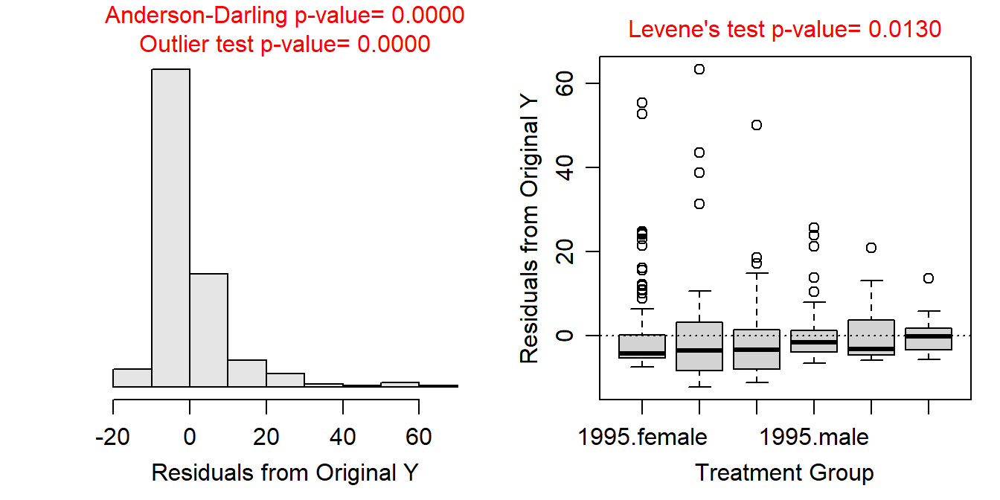
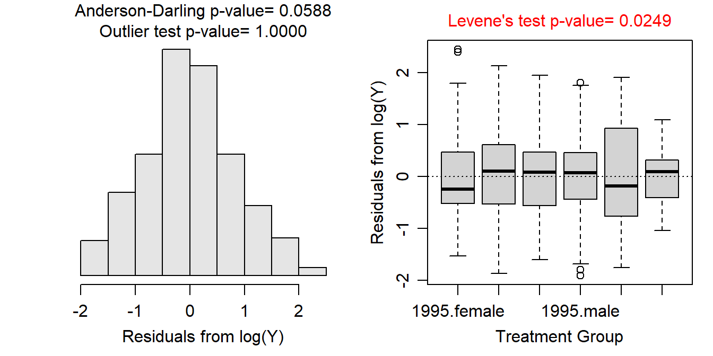
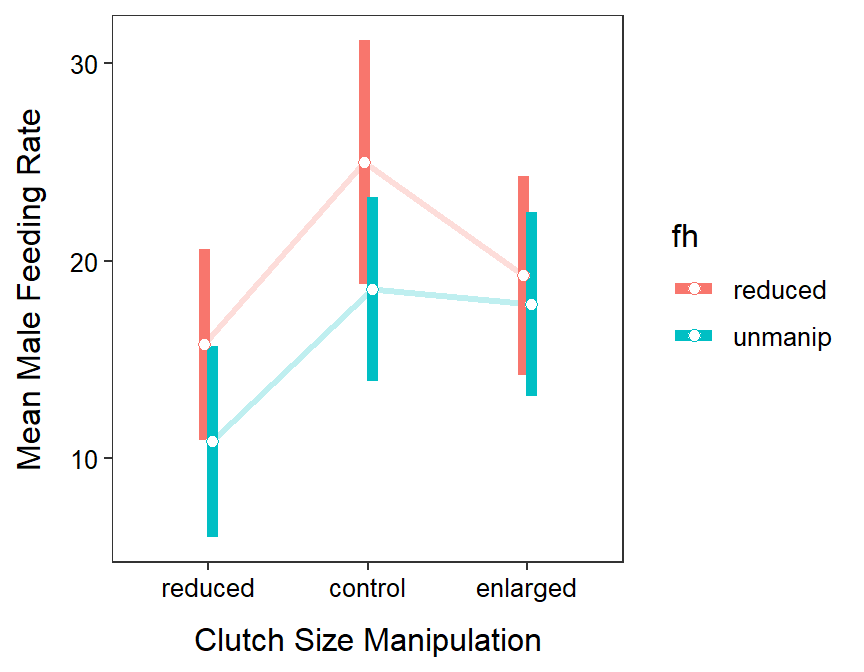
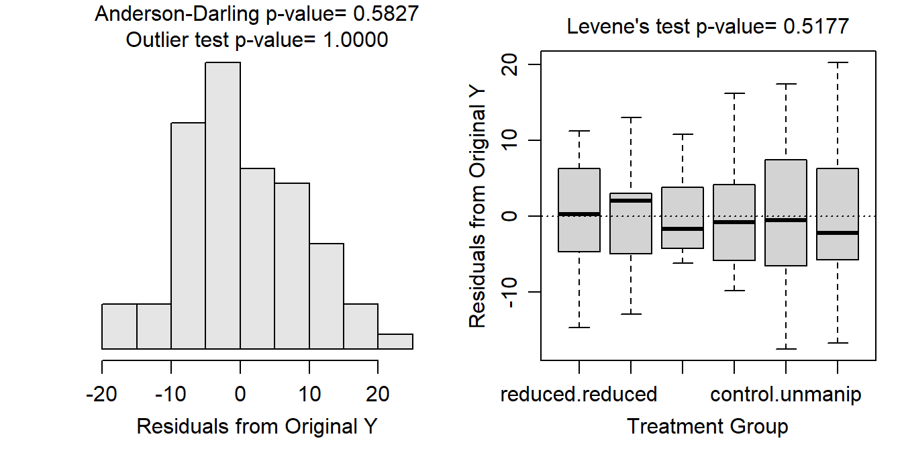
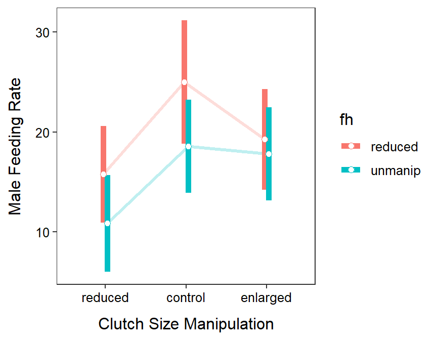

The statistical hypotheses to be examined were
\[ \begin{split} H_{0}&: \text{no year effect}: \mu_{1995} = \mu_{1996} = \mu_{1997} \\ H_{A}&: \text{year effect}: \text{At least one pair of level means is different} \end{split} \]
\[ \begin{split} H_{0}&: \text{no sex effect}: \mu_{female} = \mu_{male} \\ H_{A}&: \text{sexr effect}: \mu_{female} \neq \mu_{male} \end{split} \]
\[ \begin{split} H_{0}&: \text{no interaction effect} \\ H_{A}&: \text{interaction effect} \end{split} \]
where \(\mu\) is the mean weight of Ruffe and the subscripts identify the levels of each factor as defined above.
This study is not at all balanced as many different sample sizes of Ruffe were captured each year and of each sex.
There is among-year independence as each Ruffe was sacrificed upon captured. There is also between-sex independence as each Ruffe cannot be both male and female. However, there may be issues with within-year independence as many of the Ruffe were likely captured together in the same gear. Thus, if similar weighted Ruffe tend to congregate together and, thus, get captured together then that could be an issue. It is unlikely though that this is a big issue as Ruffe were captured at several times throughout the year. I will assume that the independence assumption has been adequately met.
Variances among the treatments appear not to be constant (Levene’s p=0.0130) and the boxplots of residuals are quite divergent; the residuals do not appear to be approximately normally distributed and are quite right-skewed (Anderson-Darling p<0.00005); and there are significant outliers (outlier test p<0.00005, p<0.00005, p<0.00005, p<0.00015, p<0.00235, p<0.02195). Clearly the assumptions are not met and a transformation should be considered.
No transformation worked perfectly for these data. A log transformation still had unequal variances (Levene’s p=0.0249), but the boxplots of residuals are no longer wildly divergent; the residuals do appear to be approximately normally distributed (p=0.0588); and there are no longer any significant outliers (outlier test p>1). The hypothesis tests are likely very sensitive to slight departures from the assumptions as the sample size is quite larger. Given this, I will assume that the assumptions adequately met on the log scale and continue to analyze the data with this transformation.
There appears to be a significant interaction effect (p=0.0014); thus, the main effects cannot be interpreted directly from these results.
Tukey’s multiple comparisons show that the mean weight of female Ruffe was between 1.36 and 3.66 times greater than the mean weight of female Ruffe in 1996 (p=0.0001), but that male and female mean weight did not differ in the other two years (p≥0.9560). The mean weight of female Ruffe increased between 1.09 and 2.47 times from 1995 to 1996 (p=0.0069), but stayed the same from 1996 to 1997 (p=1.0000). In contrast, the mean weight of males stayed the same from 1995 to 1996 (p=0.4902), but was between 1.00 and 3.26 times greater in 1996 than in 1997 (p=0.0493).
The mean weight of Ruffe did not vary consistently among years and sexes. Female Ruffe were heavier in 1996 and 1997 than in 1995, on average, but male Ruffe only slightly heavier in 1997 compared to 1996. Regardless, there is no evidence for a downward trend in weight of Ruffe, thus there is little evidence that a density-dependent effect had yet to affect this population of Ruffe.
> ruf <- read.csv("http://derekogle.com/NCMTH207/modules/ce/data/Ruffe_Flag.csv")
> ruf <- filter(ruf,Sex!="unknown")
> ruf$Year <- factor(ruf$Year)
>
> lm1.ruf <- lm(Weight~Year+Sex+Year:Sex,data=ruf)
>
> xtabs(~Sex+Year,data=ruf) Year
Sex 1995 1996 1997
female 108 55 27
male 76 45 28> assumptionCheck(lm1.ruf)
> assumptionCheck(lm1.ruf,lambday=0)
> ruf$logWeight <- log(ruf$Weight)
> lm1.ruft <- lm(logWeight~Sex+Year+Sex:Year,data=ruf)
> anova(lm1.ruft)Analysis of Variance Table
Response: logWeight
Df Sum Sq Mean Sq F value Pr(>F)
Sex 1 5.797 5.7973 7.9147 0.005195
Year 2 7.618 3.8090 5.2002 0.005972
Sex:Year 2 9.817 4.9086 6.7014 0.001402
Residuals 333 243.913 0.7325 > aov1.ruft <- anova(lm1.ruft)
> p.aov1.ruft <- aov1.ruft$"Pr(>F)"
> mc1.ruft <- emmeans(lm1.ruft,specs=pairwise~Year:Sex,tran="log",type="response")
> ( mc1sum.ruft <- summary(mc1.ruft,infer=TRUE) )$emmeans
Year Sex response SE df lower.CL upper.CL t.ratio p.value
1995 female 5.53 0.455 333 4.70 6.50 20.762 <.0001
1996 female 9.08 1.048 333 7.24 11.40 19.117 <.0001
1997 female 8.96 1.475 333 6.48 12.38 13.310 <.0001
1995 male 5.40 0.530 333 4.45 6.55 17.180 <.0001
1996 male 4.07 0.519 333 3.16 5.23 10.993 <.0001
1997 male 7.35 1.188 333 5.34 10.10 12.329 <.0001
Confidence level used: 0.95
Intervals are back-transformed from the log scale
Tests are performed on the log scale
$contrasts
contrast ratio SE df lower.CL upper.CL t.ratio p.value
1995 female / 1996 female 0.609 0.0863 333 0.405 0.914 -3.501 0.0069
1995 female / 1997 female 0.617 0.1137 333 0.364 1.047 -2.620 0.0954
1995 female / 1995 male 1.024 0.1312 333 0.709 1.478 0.181 1.0000
1995 female / 1996 male 1.360 0.2065 333 0.880 2.101 2.024 0.3310
1995 female / 1997 male 0.753 0.1366 333 0.447 1.266 -1.566 0.6216
1996 female / 1997 female 1.014 0.2039 333 0.570 1.805 0.069 1.0000
1996 female / 1995 male 1.681 0.2547 333 1.089 2.596 3.429 0.0088
1996 female / 1996 male 2.234 0.3843 333 1.364 3.657 4.671 0.0001
1996 female / 1997 male 1.236 0.2456 333 0.699 2.185 1.067 0.8940
1997 female / 1995 male 1.658 0.3179 333 0.957 2.873 2.637 0.0914
1997 female / 1996 male 2.203 0.4589 333 1.212 4.002 3.790 0.0024
1997 female / 1997 male 1.219 0.2814 333 0.629 2.363 0.858 0.9560
1995 male / 1996 male 1.329 0.2139 333 0.837 2.108 1.765 0.4902
1995 male / 1997 male 0.735 0.1391 333 0.427 1.265 -1.625 0.5825
1996 male / 1997 male 0.553 0.1140 333 0.307 0.999 -2.872 0.0493
Confidence level used: 0.95
Conf-level adjustment: tukey method for comparing a family of 6 estimates
Intervals are back-transformed from the log scale
P value adjustment: tukey method for comparing a family of 6 estimates
Tests are performed on the log scale > pd <- position_dodge(width=0.1)
> ggplot(data=mc1sum.ruft$emmeans,
mapping=aes(x=Year,group=Sex,color=Sex,
y=response,ymin=lower.CL,ymax=upper.CL)) +
geom_line(position=pd,size=1.1,alpha=0.25) +
geom_errorbar(position=pd,size=2,width=0) +
geom_point(position=pd,size=2,pch=21,fill="white") +
labs(y="Weight (g)",x="Year of Capture") +
theme_NCStats()
This study is not at all balanced as many different sample sizes were in each treatment. It is not clear why this is the case, though I suspect some things went “wrong” in some of the treatments as most sample sizes are near 14 except for the control clutch size and reduce forehead patch size group.
We really need more information to fully assess independence in this case. However, the author randomly assigned clutch size and forehead manipulations, so the individuals are likely dependent enough. A lack of dependency could come from the nests being in close proximity to each other such that the activities of one male bird would affect the others. There is, however, no evidence to either support or refute this.
The variances appear to be equal (Levene’s p=0.5177) and the boxplots of residuals are fairly similar; the residuals do appear to be approximately normally distributed (p=0.5827); and there are no significant outliers (outlier test p>1). The assumptions appear to be met on the original scale and thus will not be transformed.
There does not appear to be a significant interaction effect (p=0.6072). There does however appear to be main effects for both the clutch size manipulation (p=0.0111) and forehead patch size manipulation (p=0.0499) factors.
The mean male feeding rate was between 2.10 and 14.22 units lower for the reduced clutch size than the control clutch size (p=0.0054). The mean male feeding rate for the enlarged clutch size did not differ significantly from the control (p=0.4994) or reduced (p=0.0774) clutch sizes. The mean male feeding rate was between 0.03 and 8.19 greater for the reduced forehead flycatchers than those with unmanipulated foreheads (p=0.0482).
Sanz’s hypotheses were generally supported. The feeding rate of the males was supported when brood demand (i.e., clutch) size increased from the reduced to the control treatments, but not from the control to enlarge treatments and also not statistically from the reduced to enlarged treatments. Thus, there may be a threshold clutch size above which feeding rate of males does not increase. There is some evidence as well to support the hypothesis that feeding rate of males increased as attractiveness decreased (i.e., as the forehead patch size was reduced).
> pf <- read.csv("http://derekogle.com/NCMTH207/modules/ce/data/PiedFlycatcher.csv")
> pf$csm <- factor(pf$csm,levels=c("reduced","control","enlarged"))
> lm1.pf <- lm(mfr~csm+fh+csm:fh,data=pf)
> xtabs(~csm+fh,data=pf) fh
csm reduced unmanip
reduced 13 13
control 8 14
enlarged 12 14> assumptionCheck(lm1.pf)
> anova(lm1.pf)Analysis of Variance Table
Response: mfr
Df Sum Sq Mean Sq F value Pr(>F)
csm 2 735.6 367.79 4.8077 0.01114
fh 1 304.9 304.89 3.9854 0.04990
csm:fh 2 76.9 38.45 0.5026 0.60720
Residuals 68 5202.0 76.50 > lm1.pf.noint <- lm(mfr~csm+fh,data=pf)
> mc1.pf.csm <- emmeans(lm1.pf.noint,specs=pairwise~csm)
> ( mc1sum.pf.csm <- summary(mc1.pf.csm,infer=TRUE) )$emmeans
csm emmean SE df lower.CL upper.CL t.ratio p.value
reduced 13.3 1.70 70 9.91 16.7 7.814 <.0001
control 21.5 1.87 70 17.74 25.2 11.467 <.0001
enlarged 18.6 1.70 70 15.22 22.0 10.921 <.0001
Results are averaged over the levels of: fh
Confidence level used: 0.95
$contrasts
contrast estimate SE df lower.CL upper.CL t.ratio p.value
reduced - control -8.16 2.53 70 -14.22 -2.101 -3.225 0.0054
reduced - enlarged -5.31 2.41 70 -11.08 0.459 -2.204 0.0774
control - enlarged 2.85 2.52 70 -3.19 8.893 1.129 0.4994
Results are averaged over the levels of: fh
Confidence level used: 0.95
Conf-level adjustment: tukey method for comparing a family of 3 estimates
P value adjustment: tukey method for comparing a family of 3 estimates > mc1.pf.fh <- emmeans(lm1.pf.noint,specs=pairwise~fh)
> ( mc1sum.pf.fh <- summary(mc1.pf.fh,infer=TRUE) )$emmeans
fh emmean SE df lower.CL upper.CL t.ratio p.value
reduced 19.9 1.53 70 16.8 22.9 13.014 <.0001
unmanip 15.7 1.36 70 13.0 18.4 11.605 <.0001
Results are averaged over the levels of: csm
Confidence level used: 0.95
$contrasts
contrast estimate SE df lower.CL upper.CL t.ratio p.value
reduced - unmanip 4.11 2.04 70 0.0332 8.19 2.011 0.0482
Results are averaged over the levels of: csm
Confidence level used: 0.95 > mc1.pf <- emmeans(lm1.pf,specs=pairwise~csm:fh)
> ( mc1sum.pf <- summary(mc1.pf,infer=TRUE) )$emmeans
csm fh emmean SE df lower.CL upper.CL t.ratio p.value
reduced reduced 15.8 2.43 68 10.93 20.6 6.501 <.0001
control reduced 25.0 3.09 68 18.83 31.2 8.084 <.0001
enlarged reduced 19.2 2.52 68 14.21 24.3 7.624 <.0001
reduced unmanip 10.8 2.43 68 6.01 15.7 4.471 <.0001
control unmanip 18.6 2.34 68 13.91 23.2 7.945 <.0001
enlarged unmanip 17.8 2.34 68 13.12 22.5 7.609 <.0001
Confidence level used: 0.95
$contrasts
contrast estimate SE df lower.CL upper.CL t.ratio p.value
reduced reduced - control reduced -9.231 3.93 68 -20.76 2.29 -2.349 0.1895
reduced reduced - enlarged reduced -3.481 3.50 68 -13.75 6.79 -0.994 0.9183
reduced reduced - reduced unmanip 4.923 3.43 68 -5.14 14.98 1.435 0.7058
reduced reduced - control unmanip -2.802 3.37 68 -12.68 7.08 -0.832 0.9605
reduced reduced - enlarged unmanip -2.016 3.37 68 -11.90 7.86 -0.599 0.9908
control reduced - enlarged reduced 5.750 3.99 68 -5.96 17.46 1.440 0.7025
control reduced - reduced unmanip 14.154 3.93 68 2.63 25.68 3.601 0.0076
control reduced - control unmanip 6.429 3.88 68 -4.94 17.80 1.658 0.5636
control reduced - enlarged unmanip 7.214 3.88 68 -4.15 18.58 1.861 0.4347
enlarged reduced - reduced unmanip 8.404 3.50 68 -1.86 18.67 2.400 0.1708
enlarged reduced - control unmanip 0.679 3.44 68 -9.41 10.77 0.197 1.0000
enlarged reduced - enlarged unmanip 1.464 3.44 68 -8.63 11.55 0.426 0.9981
reduced unmanip - control unmanip -7.725 3.37 68 -17.60 2.15 -2.293 0.2111
reduced unmanip - enlarged unmanip -6.940 3.37 68 -16.82 2.94 -2.060 0.3205
control unmanip - enlarged unmanip 0.786 3.31 68 -8.91 10.48 0.238 0.9999
Confidence level used: 0.95
Conf-level adjustment: tukey method for comparing a family of 6 estimates
P value adjustment: tukey method for comparing a family of 6 estimates > pd <- position_dodge(width=0.1)
> ggplot(data=mc1sum.pf$emmeans,
mapping=aes(x=csm,group=fh,color=fh,
y=emmean,ymin=lower.CL,ymax=upper.CL)) +
geom_line(position=pd,size=1.1,alpha=0.25) +
geom_errorbar(position=pd,size=2,width=0) +
geom_point(position=pd,size=2,pch=21,fill="white") +
labs(y="Male Feeding Rate",x="Clutch Size Manipulation") +
theme_NCStats()